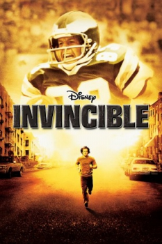

Country:United States, 105 minutes
Spoken languages:
Genres:Drama, History
Director(s):Ericson Core
Writer(s):Brad Gann
Video Codec:Unknown
Number: 1250


Certification:PG
Storyline:
Inspired by the true story of Vince Papale, a man with nothing to lose who ignored the staggering odds and made his dream come true. When the coach of Papale's beloved hometown football team hosted an unprecedented open tryout, the public consensus was that it was a waste of time – no one good enough to play professional football was going to be found this way.
Cast:


Medium: Original DVD,
Loaned: No
Aspect ratio: Unknown